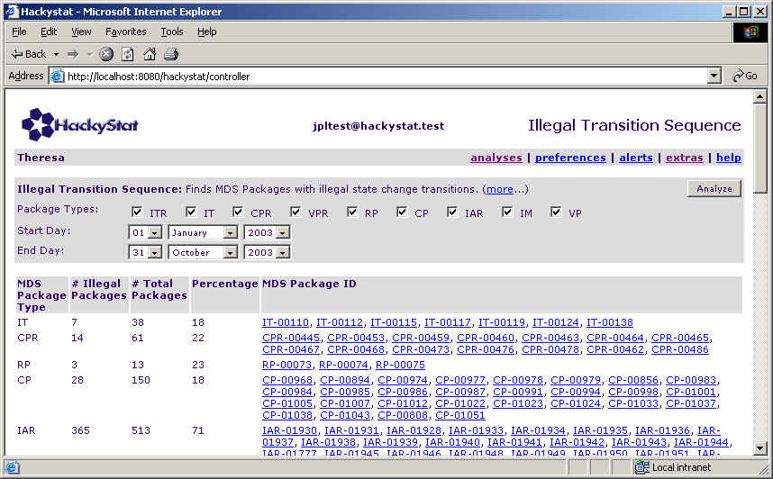

Philip Johnson
Aaron Kagawa
Collaborative Software Development Laboratory
Department of Information and Computer Sciences
University of Hawaii
johnson@hawaii.edu
kagawaa@hawaii.edu
CSDL-03-07
http://csdl.ics.hawaii.edu/techreports/03-07/03-07.html
Last update: 10/24/2003 08:19:06 AM
This report presents selected initial results from Hackystat-based descriptive analyses of Harvest workflow data gathered from the Mission Data System software development project from January, 2003 to August, 2003. We present the motivation for this work, the methods used, examples of the analyses, and questions raised by the results. Our major findings include: (a) workflow transitions not documented in the "official" process; (b) significant numbers of packages with unexpected transition sequences; (c) cyclical levels of development "intensity" as represented by levels of promotion/demotion; (d) a possible approach to calculating the proportion of "new" scheduled work versus rework/unscheduled work along with baseline values; and (e) a possible approach to calculating the distribution of package "ages" and days spent in the various workflow states, along with potential issues with the representation of "package age" based upon the current approach to package promotion.
The report illustrates how our current approach to analysis can yield descriptive perspectives on the MDS development process. It provides a first step toward more prescriptive, analytic models of the MDS software development process by providing insights into the potential uses and limitations of MDS product and process data.
As part of our research in support of the NSF/NASA Highly Dependable Computing and Communication Systems Research Program, we have been investigating tools and techniques to aid in understanding and improving the development and build process used by the Mission Data System group at Jet Propulsion Laboratory. Our motivation for the approach we are following includes the following:
We are following an exploratory methodology for this research. In the first stage, we began by developing a design specification for a Hackystat-based system to support MDS build data collection and analysis. This specification was informally reviewed by members of the MDS development team, and we produced a revised version that incorporated their suggestions for improvements.
In the second stage, we worked with JPL personnel to develop tool support for extracting development data from the Harvest configuration management system in a format suitable for transmission to the Hackystat server and subsequent analysis. This work resulted in a set of scripts for extracting data from Harvest and producing files in a format that can be sent to the Hackystat system. The current script provides MDS software development data from January, 2003 to September, 2003.
In the current stage, we have developed a set of analyses over this data, and the example results shown in this report are intended to be used as a basis for evaluating these analyses, suggesting improvements, and developing additional analyses for implementation.
In the next stage, we will work with JPL personnel to adapt the scripts to run on a daily basis so that a JPL-based Hackystat server will contain both historical and current data about the state of the build. We will continue to evaluate and improve our set of analyses in consultation with JPL personnel.
Once we have refined one or more analyses to the point that they represent useful "thresholds" for development dynamics, we will implement Hackystat "alerts" in order to monitor these values automatically and notify MDS project personnel automatically via email when they are exceeded.
The Hackystat-JPL configuration (or adaptation, to use MDS terminology) provides two interfaces: a back-end interface that supports collection of data from the Harvest system, and a front-end interface that supports user interaction. In this report, we focus on the front-end interface. The following screen images show the contents of the "Analyses" page for the Hackystat-JPL configuration, which currently provides 14 analysis commands. Because this page is too large to fit in a single screen dump, I've made multiple screen shots for each section of analyses on the page.
The first section on the Analyses Page, "MDS Development Efficiency/Effectiveness", contains analyses that help understand how well development is proceeding as reflected by the build data:
The second section, "MDS Package Age", contains analyses based upon the "age" of a package. The age of a package is defined as the number of days required for the package to proceed from the "created" state to the "released" state. Package age analyses are restricted to those packages that have actually reached the release state; in other words, those packages for which their final "age" is known.
These analyses provide perspectives on the number of days a package spends in a particular state (such as Dev, or Dev Complete). In contrast to Package Age analyses, which include only packages that have reached the release state, the State Days analyses typically include only packages that haven't reached the release state. The motivation for this is to provide analyses that focus on the state of the "pipeline" at the time the analysis is run, as opposed to including packages that have already reached a finished state.
The third section, "MDS Summary Data", contains analyses that provide overviews of the data in the system. These analyses are useful for "drilling down" into the data based upon issues and questions raised by other analyses. They are also useful for debugging the system and understanding the data representations.
The fourth section contains an analysis we developed to help isolate packages that appear to have data inconsistencies and to provide views of the raw data in the system during debugging.
The following subsections present examples from running the various analyses developed so far. One goal of this section is to provide a kind of informal user guide for MDS personnel who wish to explore the data themselves by showing sample analyses and their results. Other goals are to provide a flavor for the kinds of analyses that are currently available, illustrate some of the open questions we have about the MDS development process, and provide motivation for where we think we need to go next.
This analysis presents some overall statistics regarding the data currently present in the system.
This system summary page is intended to provide a high level overview of the numbers and kinds of entities under analysis. In this case, the system summary generates the following question:
(Note: each question in this report is preceded by a label identifying the section in which it appears (i.e. "3.1") as well as a letter indicating the question number ("a", "b", "c", etc.))
This analysis shows how the various MDS packages moved between workflow states over a given period of time. The first screen below provides two tables, one that displays the types and occurrences of "forward" transitions, and one that counts the types and occurrences of "backward" transitions:
The Harvest workflow model presented in the MDS documentation indicates that there is only one "forward" path through the system, and the Forward Transitions table verifies that this is indeed true for the time period under study and the data collected. In other words, from the "Created" state, packages were only promoted to Dev; from the Dev state, packages were only promoted to Dev Complete, and so on.
We can also see that during this period, 737 MDS packages were created, and 878 made it to the Release state. The fact that more packages were released than created during this period simply indicates that 141 packages were in an intermediate state on January 1, 2003, the start date of this analysis.
The fact that almost 900 packages transitioned to the Release state in approximately 9 months indicates an average rate of around 100 released packages a month for this time period.
Finally, we re-iterate that this data seems inconsistent with the number of Build events collected by the system during this interval, since over 1000 packages entered the CM Build state.
The Backward Transitions table shows the that there are multiple ways a package can move "against the workflow" and be demoted. For example, the first three rows shows that packages were demoted to Dev from three other states: Dev Complete, Build Queue, and CM Build. Packages were demoted to Dev Complete from two states: Build Queue and CM Build. It is interesting to note that of these 7 types of demotion, only 2 are specified (as backward arrows) in the Harvest Package Lifecycle specification:
This leads to the following question:
An additional minor point is that the documentation uses "Build_Test", while the data provided to us calls this state "CM Build".
The Backward Transition table also shows that the vast majority of demotions began in the CM Build state, and resulted in demotions to the Dev (166 times) or Build Queue (266 times). This raises the following question:
We also note 2 transitions from CM Build to Dev Complete, which we find puzzling given our understanding of the meaning of the Dev Complete state.
Following the forward and backward transition tables in this analysis is a table that shows the actual paths taken through the workflow by the various MDS packages:
This table is constructed by analyzing the State Change events and listing the "Start" field values in chronological order. There are several potential questions raised by the data presented in this table.
In addition to these anomalies, the table also reveals the variety of paths that packages take as they pass through the workflow. Consider, for example, the package CP-01022. This package was Created on 3/24 and entered Release on 5/16. During its short but illustrious life, it returned to the Dev state no less than 10 times!
As noted in the last section, we discovered that the sequences of state transition data entries provided to us do not always appear to be "legal", in that the end state of one transition is equal to the start state of the next transition in chronological order. To better support resolution of this issue, we implemented an analysis called "Illegal Transition Sequence", which searches all the specified package types for the specified time interval and provides links to those with transition data where the start state of a transition does not equal the end state of the previous transition. We found quite a few packages of this type, and constructed the following table to identify those packages as well as provide a perspective on the percentage of the package types so afflicted.

These results raise the following question:
We also discovered that many packages went from the dev to the dev complete state without any files being added, deleted, or modified. Our assumption is that any package in the "dev" state should undergo some modification, and thus some kind of file-level impact should occur before the transition to Dev Complete can take place. We added a second table to the Illegal Transition analysis command to display those packages with a Dev->Dev Complete analysis without any attached files:
This analysis raises the following question:
The Promotions vs. Demotions analysis provides a perspective on both development "velocity" (as represented by the number of promotions) and its "friction" (as represented by the number of demotions) over time. This analysis requires a Start Date, the number of periods to chart, and the size of each period in days. For the following example, we set the period size to two weeks, and charted 14 of these two week intervals. (The last several intervals are empty since they represent dates for which we do not yet have data.)
Due to the size of the chart image, two screen images are provided: one containing the Hackystat command, and the other containing the chart that results from execution of the command:
This chart raises the following questions:
[Q.3.4.a] Does the cyclical rise and fall of promotions represent a predictable pattern of development activity? This chart shows that the number of promotions in a given two week interval seems to cycle regularly between a low of around 400 and a high of over 1000. What causes this cycle, and can this aid in project planning?
[Q.3.4.b] Does the relatively constant level of demotions
represent a predictable pattern of development activity? This
chart also shows that the number of demotions in a two week interval does
not appear to vary much at all. To better illustrate this, the following
screen image illustrates an invocation of the same analysis, except that
the output representation is "Table" rather than "Chart":
As you can see, the number of demotions varied between 51 and 74 in eight
out of ten of the intervals.
[Q.3.4.c] Do we need to add a selector to choose the particular package types in the analysis? It might be useful to understand which kinds of packages were promoted and demoted in a given time period as a way of determining the underlying cause of this cyclical variation.
[Q.3.4.d] Will the current baseline levels of promotions and demotions change as new developers are added to the project or other process changes occur?
The next analysis looks at the "velocity" of MDS development from the perspective of the numbers of packages entering a given Harvest state during a given interval of time. The general idea is that the higher number of packages entering a state, the greater the overall development velocity, or "throughput". This analysis is similar to the Promotions vs. Demotions analysis, in that it allows you to specify a start date, the number of periods to graph, and the period size in days. It also allows you to specify which state change transitions you would like to see appear in the chart. In addition to the specified state change transitions, it also graphs the number of developers and the number of build failures. At the time of the design of this analysis, we conjectured that package transitions might be correlated in some fashion with the number of developers and build failures.
The most obvious feature of this analysis is a re-occurrence of the cyclical levels that appeared in the promotions vs. demotions chart. This is not surprising, given that the promotions vs. demotions chart also is based upon counting of the state changes. This chart, however, provides more detail on what is occurring. First, it reveals that state changes into the release state occur in "bunches": over the 10 two week intervals illustrated in this chart, all state changes to release occurred in three of them, at periods 2, 5, and 9. Not only that, the first two of those three periods also coincided with local rises in most of the other transitions. In the third cycle, there was a slight offset, with all of the state changes except that to the release state reaching their cyclical maximum in the two week interval prior to the interval where the transition to the release state reached its maximum.
The chart also shows that the number of developers and the number of test failures does not appear correlated with any state change data.
This chart seems to indicate that development occurs in waves, with "pushes" approximately every six to eight weeks in which the attempt is made to "clean out" the build pipeline and move as many packages as possible into the Release state.
This analysis raises the following questions:
[Q.3.5.a] Are significant numbers of packages are left to "languish" in test complete for weeks at a time, followed by a "cleanup" phase every couple of months? If so, this approach will undermine our analyses based upon "age", because the age of a package is calculated as the number of days between the Created state change and the Release state change. We might want to calculate "age" as the number of days from Created to Test Complete, since that might more accurately reflect the days required to get the package through the system.
[Q.3.5.b] Is a cyclical change in the level of state change transitions accidental, deliberate, or emergent? If accidental, will this cycle disappear in the future? If deliberate, what are the pros and cons of this approach to development? If emergent, what forces act to keep it in place?
This analysis attempts to represent the proportional effort allocated to "new" work activities vs. "rework" activities. The approach used is to count the number of transitions from Dev to Dev Complete, and categorize them as a "Work" transition or a "Rework" transition. A "Work" transition is defined as a transition involving a Change Package without an associated IAR. A "Rework" transition is defined as a transition involving an IAR, an IM, or a Change Package with an associated IAR. In some sense, "rework" combines both defect repair and unscheduled work.
As you can see from the chart, this analysis indicates that a substantial proportion of transitions from Dev to Dev Complete represent rework or unscheduled work. For the first five periods, rework or unscheduled work represents approximately half of the transitions. During the second four periods, a substantially smaller percentage of transitions involved rework or unscheduled work. The final period represents partial data.
An open question is the extent to which this representation of work and rework based upon state transitions accurately models the effort spent by the development group on work vs. rework.
A second open question is whether the decrease in percentage transitions allocated to rework during the sixth to ninth periods represents a process improvement.
We also discovered that no IARs are currently associated with any work packages in our dataset. In fact, the only package types with any associations are IARs! These are linked to CPRs, and in fact several of these CPR IDs are not elsewhere defined in the system. The following screen image illustrates these issues.
The questions raised by this analysis are:
The next several analyses provide a Box-and-Whisker chart representation. This section documents the visual structure and interpretation of the box and whisker chart:
| Visual Representation | Statistical Meaning |
| Horizontal line (inside box) | The median of the observations |
| Solid black dot | The mean of the observations |
| Solid colored box | The interquartile range (IQR). Divide the observations into four equal groups. The box represents Q2 and Q3. |
| Upper whisker | Observations (if any) with values up to 1.5 times the highest IQR value. |
| Lower whisker | Observations (if any) with values down to 1.5 times less than the lowest IQR value. |
| Unfilled circle | Outliers: observations between 1.5 and 3 times greater than (or less than) the highest (or lowest) IQR value. |
| Triangle | Extremes: observations beyond 3 times the IQR. Indicates data points outside the chart. |
This analysis generates box-and-whisker charts to illustrate the distribution of age values for the set of package types specified as a parameter to the analysis. Only those packages that made it to the Release state are included in this analysis, since that is required to compute their "final" age.
This chart shows that there is very wide variability in age for most of the package types in MDS over the eight months of this analysis. It clearly indicates that there is little point in referring to an "average" or "typical" CP with respect to age, and that this analysis is probably too coarse-grained to be useful except as a stimulus for developing additional questions, such as:
This analysis takes the specified package type, and collects all of the instances of that package type that have a transition recorded for them between the specified start and end date and that have not reached the Release state. By excluding packages that have reached the Release state, the analysis provides a perspective on the packages currently in the "pipeline" during the specified period.
For each of these active package instances, we find the number of days it spent in each of the Harvest states, and graph that distribution as a box-and-whisker chart.
The above analysis shows the amount and variability in time spent in the various states for Change Packages. This chart shows that Change Packages spend most of their time in Dev, Integration Test, or Test Complete. A re-running of this analysis specifying IAR as the package type reveals a different distribution, as illustrated next:
This analysis shows a trend by months of the time spent by a given package type in a given state. Specifically, it works as follows. For the given package type and month, it gathers the number of days spent by the package in the given state, and then graphs that distribution as a box and whisker chart.
So, for example, the last chart in this image shows the distribution of days spent by all CPs in the Test Complete state for each of the given months. As with most trend analyses, the ultimate goal of this analysis is to see if, over time, development is getting more predictable (or controllable) based upon decreasing variation, or getting less predictable (based upon increasing variation).
These initial results seem to indicate that variability in the time spent in different Harvest states is actually increasing over time, which raises the following question:
The final two analyses shown in this report provide high level summaries of the MDS process and product data. The MDS Package Summary analyses provides a tabular representation of the data available in the system between the chosen start and end days:
This analysis uses a Gantt Chart representation to provide a graphical representation of the packages of a certain type in the system, and how they move through the Harvest states over the time period specified.
There are a couple of things to note about this analysis that are not shown by the above example:
For ease in discussion and review, this section re-lists the questions that have been interspersed throughout this report. The labeling scheme for each question reveals the section of the report motivating the question. For example, [Q.3.1.a] refers to Section 3.1 of this report, with the "a" indicating that this is the first question in that section.
[Q.3.4.a] Does the cyclical rise and fall of promotions represent a predictable pattern of development activity?
[Q.3.4.b] Does the relatively constant level of demotions represent a predictable pattern of development activity?
[Q.3.4.c] Do we need to add a selector to choose the particular package types in the analysis?
[Q.3.4.d] Will the current baseline levels of promotions and demotions change as new developers are added to the project or other process changes occur?
[Q.3.5.a] Are significant numbers of packages are left to "languish" in test complete for weeks at a time, followed by a "cleanup" phase every couple of months?
[Q.3.5.b] Is a cyclical change in the level of state change transitions accidental, deliberate, or emergent?
A first step is to arrange a teleconference with interested MDS personnel to go over the findings in this report and obtain feedback. We are interested not only in answers to the questions listed above, but also in more general questions: are there interpretations of these descriptive analyses that we have not discussed? Are there additional analyses that we should be considering?
A second step is to install the Hackystat-JPL configuration on mds1.jpl.nasa.gov server at JPL. This will provide MDS personnel with the ability to log into the system and run these analyses themselves. We expect and hope that this live usage of the system will generate additional insights and requests for enhancements.
A third step is to modify the scripts for extraction of Harvest data to run as a daily cron job, extracting any data added to Harvest during the previous day and sending it to the MDS-based Hackystat-JPL configuration installation. This will enable the server to provide "up to the minute" analyses
A fourth step is to begin to move from descriptive to prescriptive analyses. There are two ways to proceed in this direction. The first way is by the implementation of Hackystat alerts, which monitor the data being sent to the server on a daily basis, generating email to a contact person when an analysis threshold has been exceeded. As one example, consider the Work vs. Rework analysis in Section 3.6. Once we validate the "external validity" of this analysis (i.e. that measuring transition data in this way is actually indicative of work vs. rework effort), we could easily implement an alert that establishes a threshold percentage level of rework/unscheduled work, and that sends an email to an MDS person when this threshold has been exceeded.
A second form of prescriptive analysis is the development of a model to predict Package Age or State Days based upon characteristics of the package itself, or its development history, or the external state of development, or some combination of these features. We will need significant additional research to identify appropriate factors, build the model, and validate it against further development data. A predictive model of Package Age and/or State Age, in combination with other information, can provide MDS developers with much better insight into the effects of development decisions. In conjunction with defect data, we can begin to move toward a predictive model of dependability.
It is important to note that even the current descriptive analysis can have utility to MDS, by providing a baseline description of the behavior of the current development process as reflected by Harvest data. By noting the date at which significant changes to the development process were implemented, the descriptive analyses can be used to see what effect, if any, these changes had on the development process. For example, the current descriptive analyses reflect approximately 15 active developers. What will be the effect of adding 5, 10, or 20 additional developers to the group? Changes to the build process, or incorporation of new design or implementation tools might also be expected to impact in some fashion on these descriptive analyses.